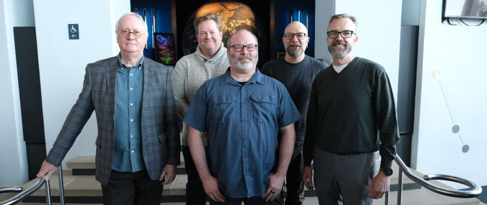

About VCII
The focal point for intelligent imaging at Vanderbilt Health.
VCII links the scanner, the clinic, and the next scientific question in one closed loop, so every scan and every outcome makes the next one better.

Imaging and AI are used across Vanderbilt. VCII is the one place dedicated to making imaging itself intelligent: AI in every step, from how a scan is acquired, to how it is read alongside the full clinical record, to how it guides, then measures, each patient's care.
We close the loop of imaging, AI, and healthcare so each cycle improves the next, and we work openly with VALIANT, Biomedical Informatics, clinical departments, and partner centers, including multi-center data efforts.
Where three fields meet
The next advances in medical imaging come from where artificial intelligence, imaging science, and clinical medicine overlap. VCII sits at the center.
- AI × Imaging
Lead innovation
Build AI that improves how images are acquired and read, for early diagnosis, risk stratification, and personalized prognosis.
- Imaging × Medicine
Be the focal point
One front door for clinicians, scientists, engineers, industry, and partner centers to start imaging AI projects at Vanderbilt Health.
- AI × Medicine
Catalyze discovery
Read images alongside genomics, pathology, health records, and wearables, and learn from every patient outcome.
From voxels to decisions, and back again: AI that makes every image count.